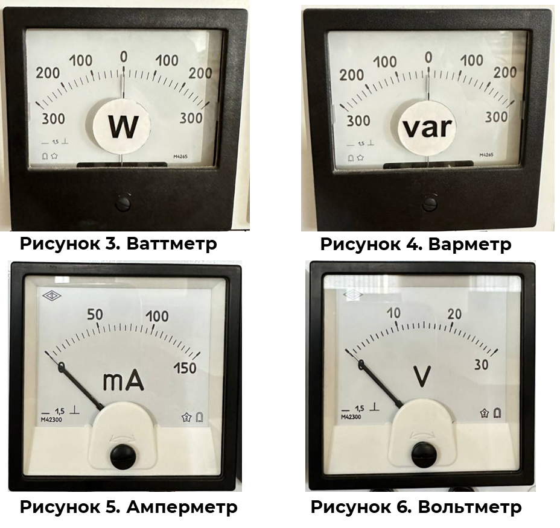

В чем измеряется электрическая нагрузка

Из курса электротехники известно, что мощность потребителя определяется как произведение напряжения и тока нагрузки.
P=U∙I
Это значит, что именно эти величины определяют параметр измерения мощности.
Активная нагрузка измеряется в Вт (Ватт), а реактивная – в вар (вольт-ампер реактивный).
Определить величину мощности, или же электрического тока и напряжения на участке сети можно с помощью измерительных приборов: ваттметр, варметр, амперметр и вольтметр.